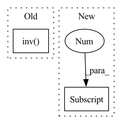

Pattern ID :25505
Before Change
intrinsic_metrix[2, 2] = 1
if inv:
intrinsic_metrix = np.linalg.inv( intrinsic_metrix) .astype(np.float32)
return intrinsic_metrix
After Change
intrinsic_metrix = np.zeros((3, 3)).astype(np.float32)
if inv:
intrinsic_metrix[0, 0] = 1.0 / f[0]
intrinsic_metrix[0, 2] = -c[0] / f[0]
intrinsic_metrix[1, 1] = 1.0 / f[1]
intrinsic_metrix[1, 2] = -c[1] / f[1]
intrinsic_metrix[2, 2] = 1In pattern: SUPERPATTERN
Frequency: 4
Non-data size: 2
Instances Fragment ID: 77714305
Project Name: jeff-sjtu/hybrik
Commit Name: 92acf081ef9614671c907a697ba7eeea5a0b08e6
Time: 2021-10-22
Author: jeff.lee.sjtu@gmail.com
File Name: hybrik/utils/pose_utils.py
M Class Name: AnonimousClass
N Class Name: AnonimousClass
M Method Name: get_intrinsic_metrix(3)
N Method Name: get_intrinsic_metrix(3)
M Parent Class:
N Parent Class:
M File Name: hybrik/utils/pose_utils.py
N File Name: hybrik/utils/pose_utils.py
M Start Line: 122
M End Line: 131
N Start Line: 122
N End Line: 137
Before Change
device=H2.device).float()
// performs the inverse square root of the covariance matrices by the cholesky decomposition. This is more stable than using SVD
SigmaHat11RootInv = torch.linalg.inv( torch.linalg.cholesky(_minimal_regularisation(SigmaHat11, self.eps)))
SigmaHat22RootInv = torch.linalg.inv(torch.linalg.cholesky(_minimal_regularisation(SigmaHat22, self.eps)))
Tval = torch.matmul(torch.matmul(SigmaHat11RootInv,
SigmaHat12), SigmaHat22RootInv)After Change
o1 = H1.shape[1]
o2 = H2.shape[1]
n = H1.shape[0]
H1bar, H2bar = _demean(H1, H2)
SigmaHat12 = (1.0 / (n - 1)) * torch.matmul(H1bar.T, H2bar) Fragment ID: 77714304
Project Name: jameschapman19/cca_zoo
Commit Name: 109657aa0c08d40d8571bc16e653094cb6206408
Time: 2021-07-14
Author: james.chapman.19@ucl.ac.uk
File Name: cca_zoo/deepmodels/objectives.py
M Class Name: CCA
N Class Name: CCA
M Method Name: loss(3)
N Method Name: loss(3)
M Parent Class:
N Parent Class:
M File Name: cca_zoo/deepmodels/objectives.py
N File Name: cca_zoo/deepmodels/objectives.py
M Start Line: 143
M End Line: 171
N Start Line: 145
N End Line: 166
Before Change
while len(p_list) < max_iter:
D = torch.eye(j.shape[1], device=j.device)
D *= 1 if meth == "lev" else torch.max(torch.maximum(H.diagonal(), D.diagonal()))
h = -torch.matmul(torch.linalg.inv( H+u*D) , g)
f_h = fun(p+h)
rho_denom = torch.matmul(h, u*h-g)
rho_nom = torch.matmul(f, f) - torch.matmul(f_h, f_h)After Change
while len(p_list) < max_iter:
D = torch.eye(j.shape[1], device=j.device)
D *= 1 if meth == "lev" else torch.max(torch.maximum(H.diagonal(), D.diagonal()))
h = -torch.linalg.lstsq(H+u*D, g, rcond=None, driver=None)[0]
f_h = fun(p+h)
rho_denom = torch.matmul(h, u*h-g)
rho_nom = torch.matmul(f, f) - torch.matmul(f_h, f_h)
rho = rho_nom / rho_denom if rho_denom > 0 else torch.inf if rho_nom > 0 else -torch.inf Fragment ID: 77714306
Project Name: hahnec/torchimize
Commit Name: ae6c7bb89c2593b2732ab9c2fedfee0d9bea8399
Time: 2022-05-16
Author: christopher.hahne@unibe.ch
File Name: torchimize/functions/lma_fun.py
M Class Name: AnonimousClass
N Class Name: AnonimousClass
M Method Name: lsq_lma(14)
N Method Name: lsq_lma(14)
M Parent Class:
N Parent Class:
M File Name: torchimize/functions/lma_fun.py
N File Name: torchimize/functions/lma_fun.py
M Start Line: 72
M End Line: 80
N Start Line: 72
N End Line: 80
Before Change
mat_contPts_w = np.concatenate((contPts_w, np.array([np.ones((4))])), axis=0)
// Calculate Alpha
Alpha = np.matmul(np.linalg.inv( mat_contPts_w) , mat_objPts_w) // simple method
Alpha = Alpha.transpose()
// Alpha = solve(mat_contPts_w, mat_objPts_w) // General method
// Alpha = Alpha.transpose()After Change
torch.Tensor: alphas, shape (batch_size, num_pts, 4)
batch_size = objPts.shape[0]
num_pts = objPts.shape[1]
batched_ones = torch.ones((batch_size, num_pts, 1), dtype=objPts.dtype, device=objPts.device)
// concatenate object points with ones
objPts = torch.cat((objPts, batched_ones), dim=-1)
// concatenate control points with ones Fragment ID: 77714312
Project Name: pypose/pypose
Commit Name: f6e65aa4066f56f1715c9ddfd89f5307c1ebe043
Time: 2023-02-24
Author: ztzhan1108@gmail.com
File Name: pypose/module/pnp.py
M Class Name: EPnP
N Class Name: EPnP
M Method Name: compute_alphas(4)
N Method Name: compute_alphas(1)
M Parent Class:
N Parent Class:
M File Name: pypose/module/pnp.py
N File Name: pypose/module/pnp.py
M Start Line: 127
M End Line: 140
N Start Line: 131
N End Line: 158